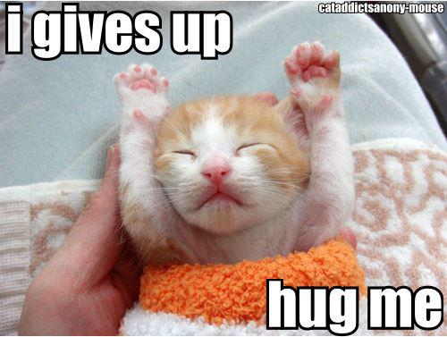
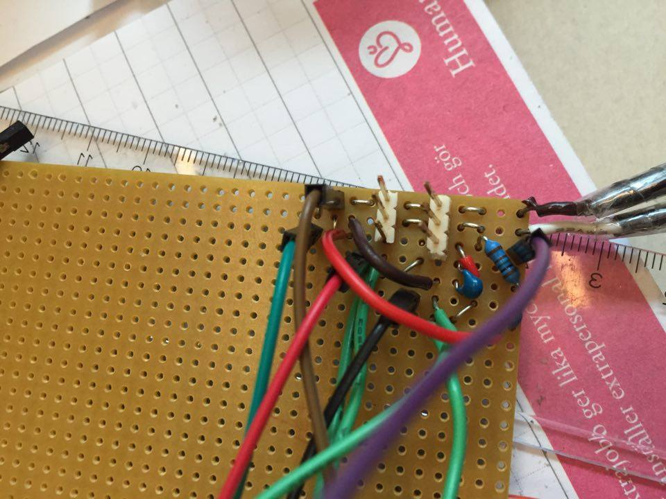
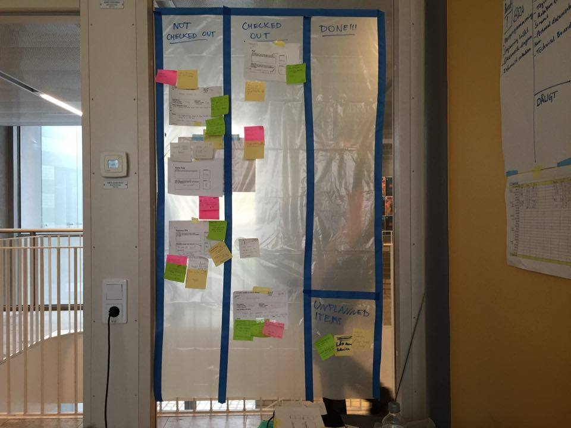
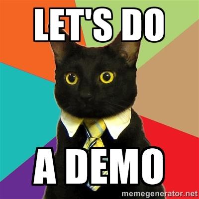
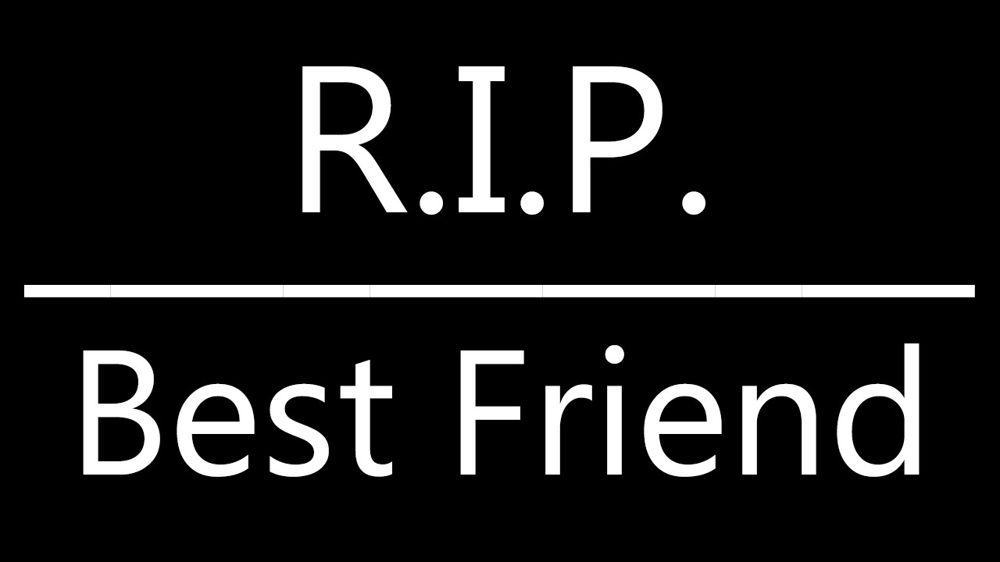
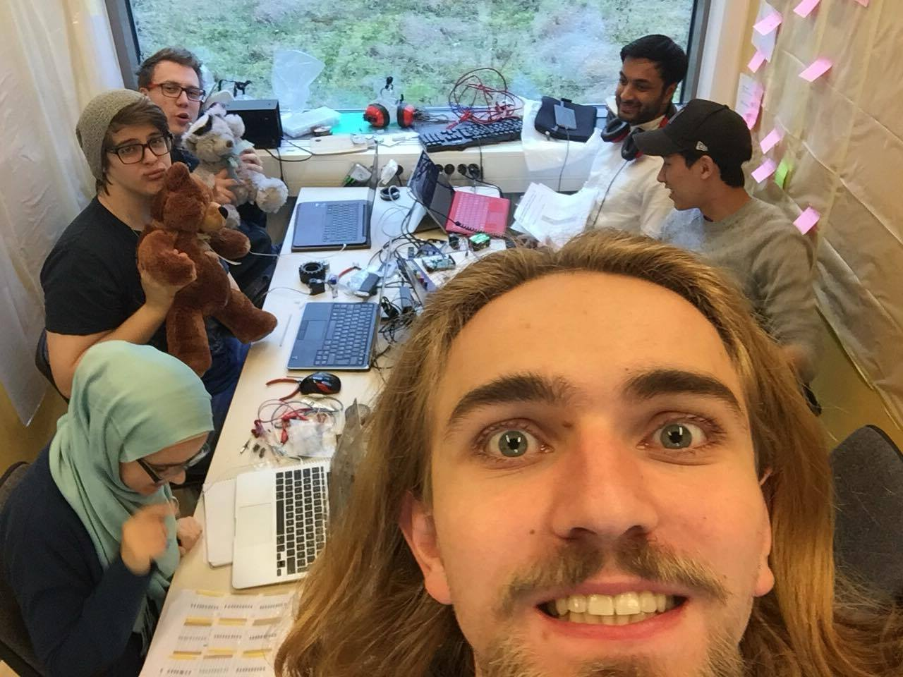
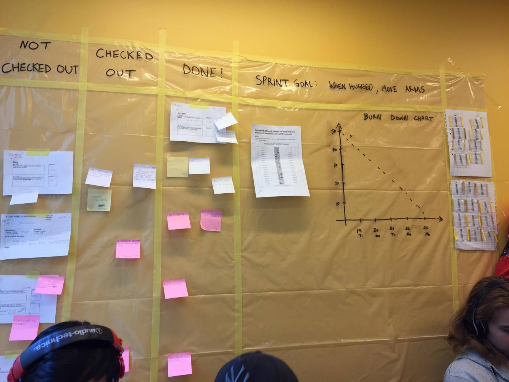

Nyheter
Dag 11 - Ny sprint
Eftersom vi hade haft vårt sprint planning meeting dagen innan så började vi dagen direkt med att dela upp denna sprintens stories till mindre tasks innan vi hade scrum meeting. Under dagen så fixade vi redan en av våra sex stories som är att kramen ska ha mjukare rörelser. Vi har även lyckats spela in ljud via vår webbkamera. Anledningen till att vi har en webbkamera istället för en mic är för att vi behöver något med ett eget ljudkort då RPi:n saknar detta och då är en billig webbkamera billigare än en mic. Vi har inte hunnit med så mycket mer än detta förutom lite uppdateringar på hemsidan då vi även har haft föreläsningar idag./Temins ålder
Dag 10 - GLOOOORRY

Idag var det dags för vår andra demo, likt förra gången så jobbade vi ända in i kaklet. Vi fick den nya trycksensorn så vi började testa koden tillsammans med sensorn.
Under demot så häpnade vi klassen men björnens rappa kramrörelse och förtrollande röst! Vi fick besvara på många intressanta frågor om hur björnen fungerar och dennes framtid.
På eftermiddagen så hade vi vår sprint retroactive där vi hade mestadels positiva saker att säga men till nästa sprint ska vi försöka ha lite mer offline programmering (inte direkt på RPi) och ha med risker på vår scrum board. Efter mötet så överraskade Fredrik oss med ett besök och undrade om vi kunde ha sprintplanning nu istället för på morgonen när sprinten börjar.
/The hugging machines
Under demot så häpnade vi klassen men björnens rappa kramrörelse och förtrollande röst! Vi fick besvara på många intressanta frågor om hur björnen fungerar och dennes framtid.
På eftermiddagen så hade vi vår sprint retroactive där vi hade mestadels positiva saker att säga men till nästa sprint ska vi försöka ha lite mer offline programmering (inte direkt på RPi) och ha med risker på vår scrum board. Efter mötet så överraskade Fredrik oss med ett besök och undrade om vi kunde ha sprintplanning nu istället för på morgonen när sprinten börjar.
/The hugging machines
Dag 9
 Idag brände vi sönder ett av våra FSR (Force Sensing Resistor). Helgen innan demot...
Då de flesta av våra stories direkt eller indirekt krävde att FSR:en funkade så fick vi dra in nya user stories in till vår sprint.
Vi började arbeta med en "service manual" och köpte in en webbkamera med mikrofon.
Idag brände vi sönder ett av våra FSR (Force Sensing Resistor). Helgen innan demot...
Då de flesta av våra stories direkt eller indirekt krävde att FSR:en funkade så fick vi dra in nya user stories in till vår sprint.
Vi började arbeta med en "service manual" och köpte in en webbkamera med mikrofon./Toodles Barett
Dag 8 - Stepping up

På morgenen när vi prövade att sätta in vårt skal med motorerna fastmonterade i björnen vilket gjorde den mycket mindre kramgo. Oskar och Temin började då bygga på en mindre låda som inte stack ut lika mycket i sidorna. Under tiden så pillade Gustaf med vår avstängningsknapp och fixade bugen som gjorde att shutdown-scriptet kördes. Oscar och Akash började skriva huvudkoden som ser till att alla sensorer, motorer etc körs samtidigt.
Under eftermiddagen så stoppade vi in allting i björnen och körde med den i ca en halvtimme för att kolla om det blir för varmt vilket det inte blev på den tiden iaf.
/Spindelmannen Oskar
Under eftermiddagen så stoppade vi in allting i björnen och körde med den i ca en halvtimme för att kolla om det blir för varmt vilket det inte blev på den tiden iaf.
/Spindelmannen Oskar
Dag 7 - Craftsmanship
 Idag har vi satt dit en knapp som stänger av enheten så att man inte behöver dra av elen och riskera att SD-kortet blir korrupt. Vi har även byggt ett skal där RPi:n och kretskortet, som nu har löts fast, får plats i och har hål för att olika sladdar ska komma in och ut. Förhoppningsvis köper vi en powerbank ikväll eller imorgon så kan vi stoppa in allting i björnen!/The care bears
Dag 6 - Fresh start
Idag så har vi haft vårat andra sprint meeting där vi tog fram vad vi skulle göra under den kommande veckan. Efter det så delade vi upp våra user stories i mindre tasks, detta är något som vi är mycket bättre på nu än förra veckan! Vi har även flyttat på våran scrum board så att den är mer åtkomlig för alla i gruppen.
Nu har vi fått björnen att spela upp en ljudfil när den blir klappad på huvudet men vi upptäckte att när trycksensorn används så går en core i RPi:n upp i 100% användning vilket vi ska titta in i under morgondagen.
/Baretts
Nu har vi fått björnen att spela upp en ljudfil när den blir klappad på huvudet men vi upptäckte att när trycksensorn används så går en core i RPi:n upp i 100% användning vilket vi ska titta in i under morgondagen.
/Baretts
Dag 5 - D-day
 På morgonen innan demot så prövade vi koden för FSR och armarna som fungerade felfritt! Däremot så fick vi inte den andra touchsensorn att fungera och så kunde vi inte löda dit alla sladdar till ett kretskort. Vi var ganska nöjda med sprinten även om PO inte var lika glad som vi över några lösningar.Under eftermiddagen så utverderade vi sprinten för att se vad som var och vad som var dåligt.
Tagga sprint två imorgon!
/BB-8
Dag 4 - sorgens dag
Delarna har kommit(Huzzah!) och vi kan äntligen jobba hådare med dom andra delarna till roboten. Vi delar in oss i olika grupper och jobbar på bra. Vid 12-tiden så märker vi att RPin är väldigt varm och vi bestämmer oss för att ta lunch så att den kan svalna. När vi kommer tillbaka vill den inte starta. Förhoppningsvis så har vi inte stekt Akashs RPi och att en säkring har gått, då borde den funka igen om ett par dagar. Två av oss gick och köpte en ny som vi sedan ska ha i björnen undertidens som resten av gruppen försökte ta reda på vad som hade gått snett.
Den höga moralen och modet försvann, gruppen kände sig lite osäkra och inte mycket blev gjort. Efter ett litet tag så prövade vi vår force touch sensor med stor framgång. Nu fungerar de olika delarna men nu måste dom fungera i symbios och åka in i björnen. /Heeeest
Den höga moralen och modet försvann, gruppen kände sig lite osäkra och inte mycket blev gjort. Efter ett litet tag så prövade vi vår force touch sensor med stor framgång. Nu fungerar de olika delarna men nu måste dom fungera i symbios och åka in i björnen. /Heeeest
Dag 3
 Delarna har inte kommit än så vi bygger vidare på armen. Under förmiddagen fick vi våran första breakthrough så vi fick ljudet att spelas ur våran högtalare som vi sedan stoppade in i huvudet på björnen. Mitt på dagen så fick vi äntligen våra servomoterer att fungera och under eftermiddagen så fick vi även motererna att göra som vi ville så vi satte på armarna. Vi prövade även att stoppa in armarna i björnen men stor framgång!
Delarna har inte kommit än så vi bygger vidare på armen. Under förmiddagen fick vi våran första breakthrough så vi fick ljudet att spelas ur våran högtalare som vi sedan stoppade in i huvudet på björnen. Mitt på dagen så fick vi äntligen våra servomoterer att fungera och under eftermiddagen så fick vi även motererna att göra som vi ville så vi satte på armarna. Vi prövade även att stoppa in armarna i björnen men stor framgång!/Framgångssagan Barett
Dag 2
Några user stories är nu färdiga och komponenterna är på väg till oss!
Oskar och Oscar har åkt och köpt delar till armarna och ett motorkontroll chip så att vi inte dödar våran Raspberry pi. Undertiden så har resten av gruppen har läst på, designat olika komponenter och prövat lite olika kopplingar med scripts till Raspberry pi:n.
På eftermiddagen så har vi gemensamt försöka lista ut hur vi ska koppla dom olika delarna till Raspberryn. Tack vare detta så har vi börjat lista ut hur servomotorerna ska kopplas för att vi inte ska förstöra några komponenter. #smallsteps
Syns imorgon /Barettbear-8
Oskar och Oscar har åkt och köpt delar till armarna och ett motorkontroll chip så att vi inte dödar våran Raspberry pi. Undertiden så har resten av gruppen har läst på, designat olika komponenter och prövat lite olika kopplingar med scripts till Raspberry pi:n.
På eftermiddagen så har vi gemensamt försöka lista ut hur vi ska koppla dom olika delarna till Raspberryn. Tack vare detta så har vi börjat lista ut hur servomotorerna ska kopplas för att vi inte ska förstöra några komponenter. #smallsteps
Syns imorgon /Barettbear-8
Dag 1
 Idag så fick vi vårat arbetsrum för de kommande veckorna och plastade in dom för att kunna ha en scrum board. Vi har köpt massvis med olika komponenter och en mysig björn att stoppa in allt i. Några av komponenterna behövdes dock köpas online och kommer inte förens i slutet av sprinten vilket ger oss lite smått panik över vårat sprint goal(;_;), med lite tur och skicklighet så kommer vi nog klara av det ändå. #dontstopbelivingVi bestämde att hjärnan i våran björn kommer vara en Raspberry pi, vilken modell det blir beror delvis på hur lätt det är att få tag i den.
/The Baretts